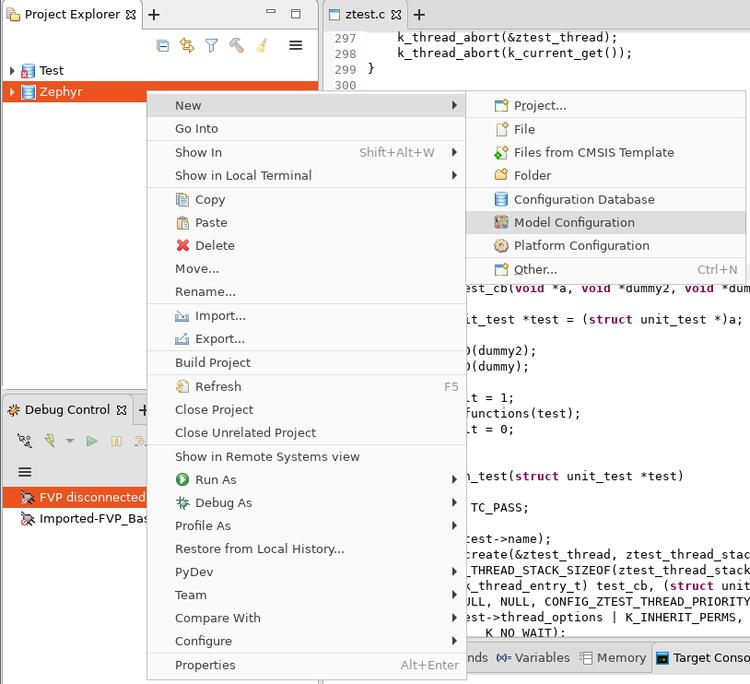
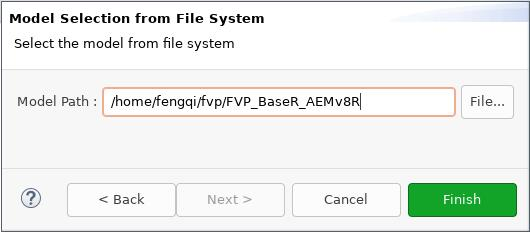
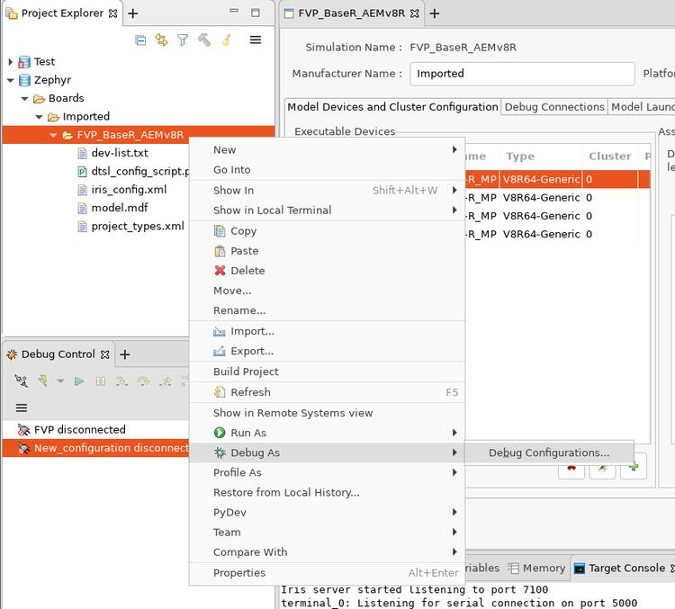
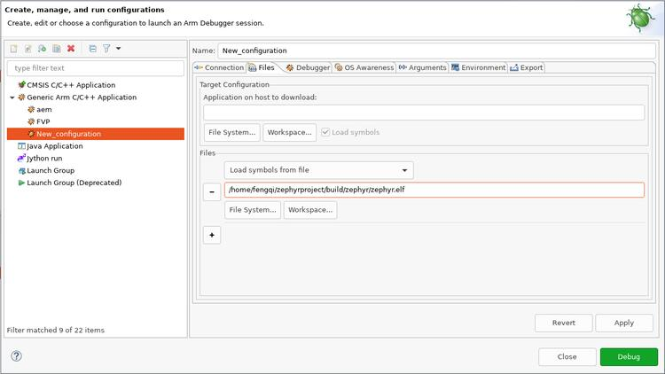

FVP BaseR AEMv8-R
概述
此开发板配置使用 Armv8-R AEM FVP [1] 仿真通用的 Armv8-R [2] 硬件平台，同时支持 32 位（AArch32）和 64 位（AArch64）架构。
固定虚拟平台（FVP）是对 Arm 系统（包括处理器、内存和外设）的完整仿真。它们以“程序员视角”构建，为构建和测试软件提供全面的模型。
Armv8-R AEM FVP 是一个免费的 Armv8-R 固定虚拟平台，支持最新的 Armv8-R 特性集。有关 FVP 的更多细节，请参阅 FVP 文档页面 [3]。
要运行固定虚拟平台仿真工具，必须从 Arm 开发者网站 [1] 下载 "Armv8-R AEM FVP"（可能需要注册），并安装到主机 PC 上。
目前要求的 "Armv8-R AEM FVP" 最低版本为 11.16.16。
硬件
支持的功能
fvp_baser_aemv8r 开发板支持下列硬件功能。
说明
The list of supported hardware features was not generated. Run a full documentation build for the required metadata to be available.
使用 -a, --application FILE 选项启动 FVP 时，内核会加载到 DRAM 区域 [0x0-0x7FFFFFFF]。更多信息请参阅官方 Armv8-R AEM FVP 内存映射文档 [4]。
设备
系统时钟
本开发板配置使用 100 MHz 的系统时钟频率。
串口
本开发板配置使用 UART0 作为唯一的串行通信通道。
编程与调试
环境
首先，在构建前设置 ARMFVP_BIN_PATH 环境变量。还可以选择设置 ARMFVP_EXTRA_FLAGS，向 FVP 传递额外参数。
export ARMFVP_BIN_PATH=/path/to/fvp/directory
编程
使用此配置可以在 Arm FVP 仿真环境中构建基本的 Zephyr 应用程序和内核测试。
对于 AArch64（64 位）应用程序，使用 Basic Synchronization 示例：
# From the root of the zephyr repository
west build -b fvp_baser_aemv8r/fvp_aemv8r_aarch64 samples/synchronization
对于 AArch32（32 位）应用程序，使用：
# From the root of the zephyr repository
west build -b fvp_baser_aemv8r/fvp_aemv8r_aarch32 samples/synchronization
这会构建包含 synchronization 示例应用程序的镜像。然后可以用 west build -t run 运行它。
调试
请参阅 应用程序调试 的详细概述。
可以按照以下说明使用 Arm Development Studio [5] 进行调试。
使用 Arm DS 调试
安装 Arm DS
详情请参阅官方 Arm Development Studio 页面 [5]。以下示例使用的是 Version: 2020.b Build: 2020110909。

下载 Arm FVP BaseR AEMv8-R
下载说明请参阅官方 FVP 页面 [1]。此处用 $FVP_D 表示 FVP 所在的目录。
使用 DS 透视图
创建新的配置数据库

创建新的模型配置
在 Project Explorer 中右键点击 Zephyr，选择 ：

在打开的窗口中：
为 Model Interface 选择 Iris，然后点击 Next >。
选择 Launch and connect to specific model，然后点击 Next >。
将 Model Path 设置为
$FVP_D/FVP_BaseR_AEMv8R，然后点击 Finish。

然后在 FVP_BaseR_AEMv8R 选项卡中，将 ARMAEMv8-R_ 改为 V8R64-Generic，点击 Save，再点击 Import：

创建新的启动配置
在 Project Explorer 中右键点击 FVP_BaseR_AEMv8R，选择 ：

选择 Generic Arm C/C++ Application，然后点击 New launch configuration 按钮。
这会创建一个名为 New_configuration 的新配置。
在 Connection 选项卡中：
在 Select target 框中，选择 Imported -> FVP_BaseR_AEMv8R -> Bare Metal Debug -> ARMAEMv8-R_MP_0
在 Connections 框中，将 Model parameters 设置为:
-C bp.dram.enable_atomic_ops=1 -C bp.sram.enable_atomic_ops=1 -C bp.refcounter.non_arch_start_at_default=1 -C gic_distributor.GICD_CTLR-DS-1-means-secure-only=1 -C gic_distributor.has-two-security-states=0 -C bp.vis.disable_visualisation=1 -C cluster0.has_aarch64=1 -a /home/fengqi/zephyrproject/build/zephyr/zephyr.elf
这些参数会在 FVP_BaseR_AEMv8R 启动时传给它。运行 FVP_BaseR_AEMv8R --help 可查看所有命令行选项，运行 FVP_BaseR_AEMv8R --list-params 可查看所有支持的参数。
-a指定的文件zephyr.elf是由 Zephyr 构建生成的二进制文件。

在 Files 选项卡中：
在 Files 组中，将 Load symbols from file 设置为构建生成的 zephyr.elf 的完整路径。

在 Debugger 选项卡中：
在 Run control 框中，勾选 Execute debugger commands 并填入:
add-symbol-file "/home/fengqi/zephyrproject/build/zephyr/zephyr.elf" EL1S:0
将 /home/fengqi/zephyrproject/build/zephyr/zephyr.elf 替换为你的本地路径。
在 Paths 框中，将 Source search directory 设置为 Zephyr 源代码的路径。

完成上述所有修改后，点击 Apply，再点击 Debug。DS 会启动 FVP_BaseR_AEMv8R 并与其连接。在 Debug Control 窗口中可以看到已连接的新会话。